Больше внимания к блюду
Выразительная тарелка становится рамкой для блюда: гость замечает подачу и запоминает её.
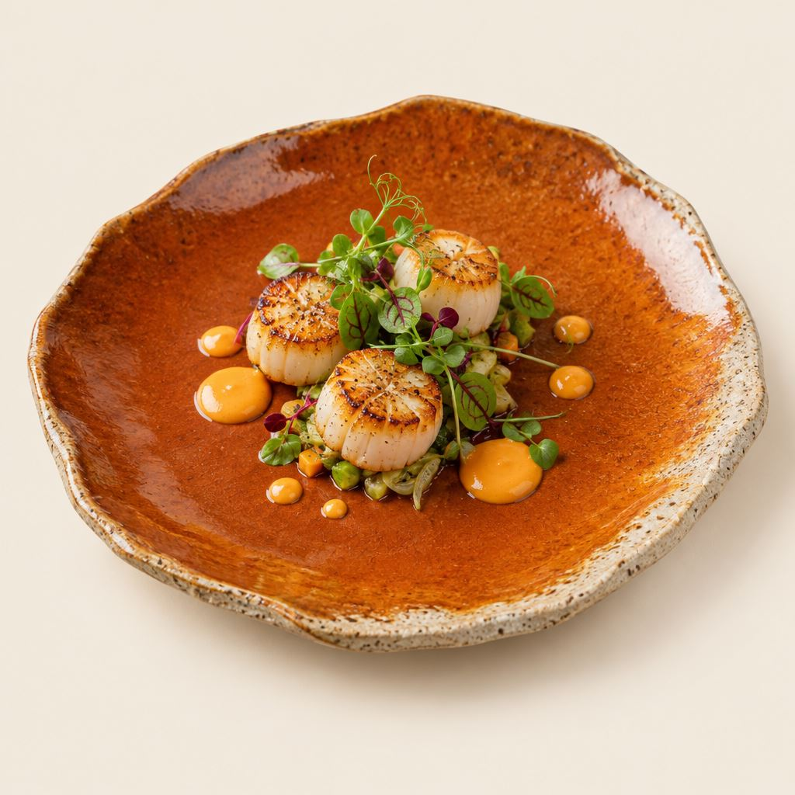
авторская керамика для ресторанов
Создаём коллекции под ваше меню и интерьер: от эскиза и образцов глазури до партии, которая выдерживает посудомойку и плотные смены.
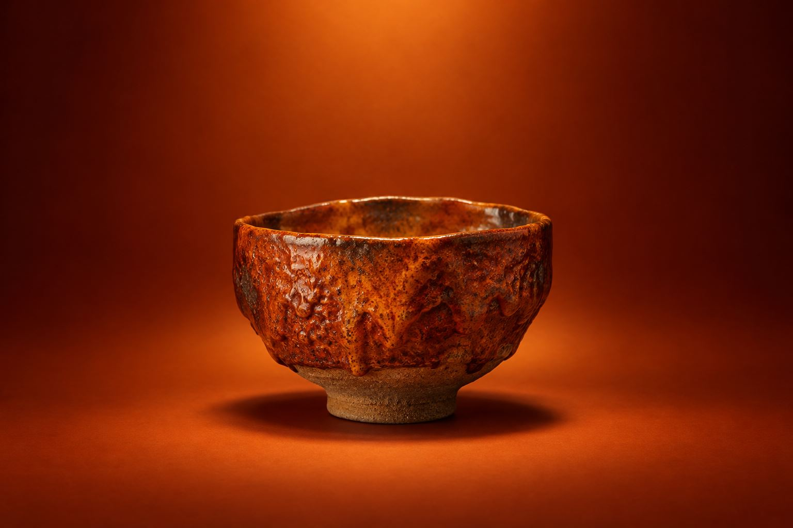
гости едят глазами
Гость оценивает блюдо глазами за пару секунд. Типовая фарфоровая тарелка обнуляет работу шефа, дизайнера интерьера и фотографа.
Одинаковая посуда не портит блюдо — она делает заведение похожим на соседнее. А похожие места не выкладывают в сторис и не советуют друзьям.
Выразительная тарелка становится рамкой для блюда: гость замечает подачу и запоминает её.
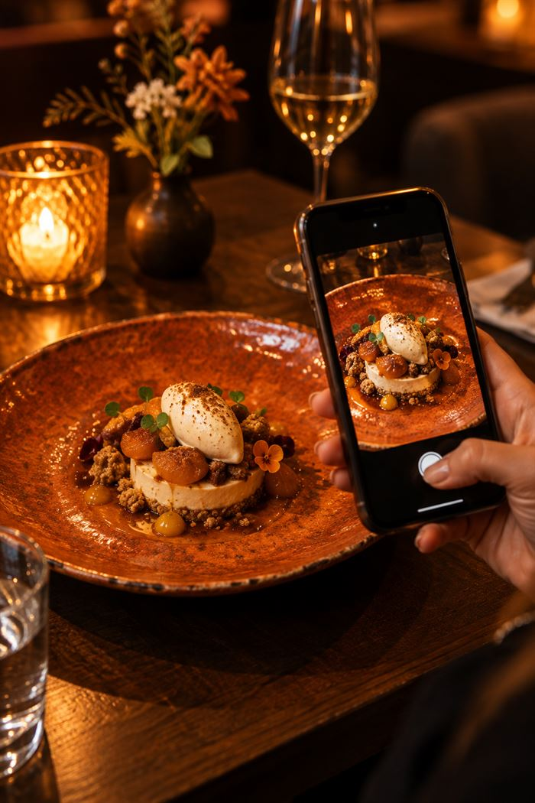
Блюдо на авторской посуде — готовый кадр. Гости сами выкладывают сторис и приводят новых гостей.
Посуда с характером работает как часть фирменного стиля — её узнают на фото.
Ручная работа поднимает восприятие уровня заведения и помогает обосновать чек.
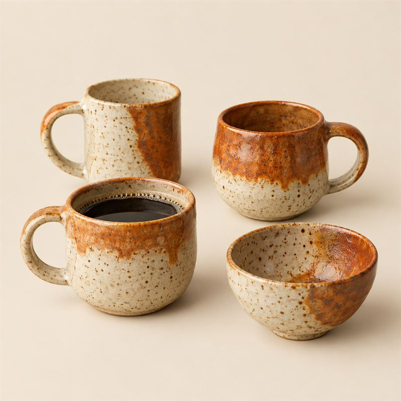
Посуда — не расходник, а инструмент, который работает на выручку каждый день
Каждую серию проектируем под конкретные блюда: размер порции, соус, температуру подачи и то, как официант несёт тарелку через зал.
Плоские, глубокие, с широким бортиком — под горячее, закуски и десерты.
Для супов, салатов и азиатской кухни. Держат тепло и не скользят в руке.
Под эспрессо, капучино и фильтр. Удобная ручка, устойчивое дно.
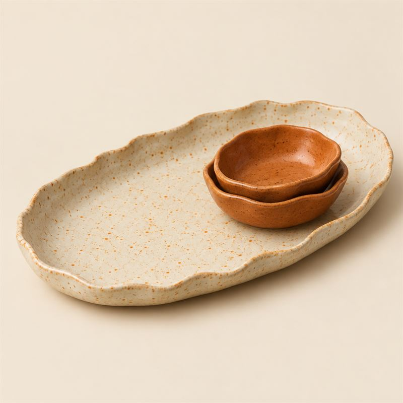
Большие формы для шеринга, сеты для соусов и закусок.
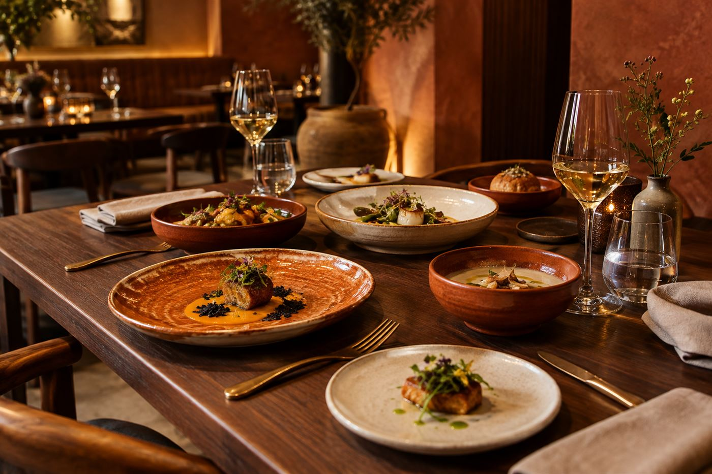
Задача: выделить сет из 9 подач, чтобы его заказывали чаще, чем основное меню.
Решение: 12 форм в трёх глазурях — от тёмной земли к огненно-оранжевой по ходу ужина.
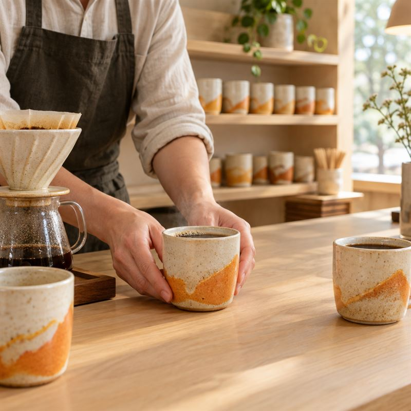
180 чашек и пиал в двух глазурях. Посуду продают на витрине как мерч.
+25%заказов фильтр-кофе после смены посуды240 изделий: блюда, соусники и подставки, которые собираются в общий сет на стол.
×1,5чаще берут сеты закусок на компанию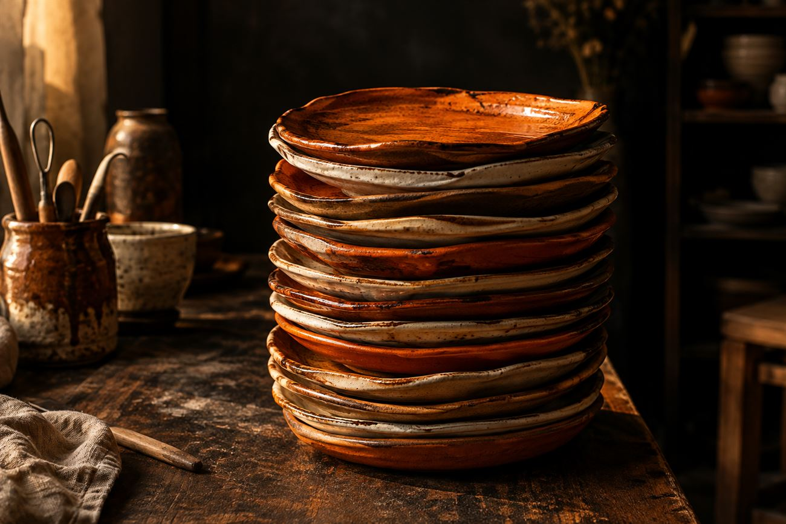
Премиальная посуда — это не только красивая форма. Её держат вместе четыре уровня, которые работают одновременно.
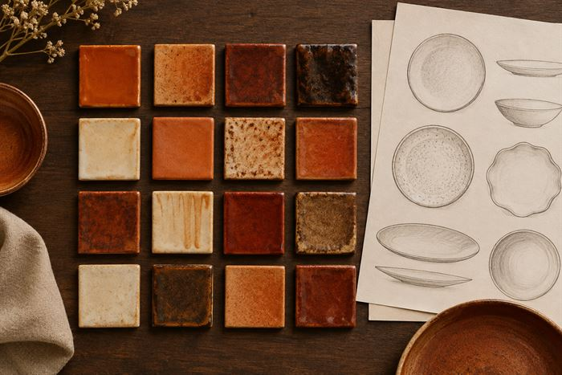
Форма и цвет под ваше меню, интерьер и характер заведения
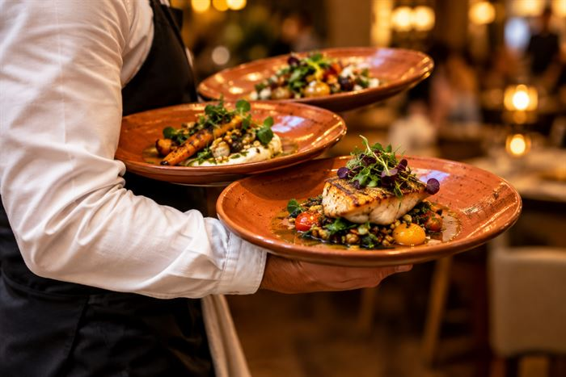
Удобно шефу, официанту и гостю: вес, бортик, устойчивость, стопка
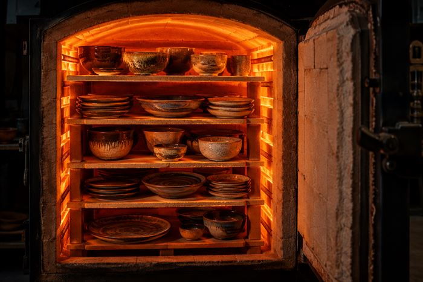
Высокотемпературный обжиг: посудомойка, плотные смены, перепады температур
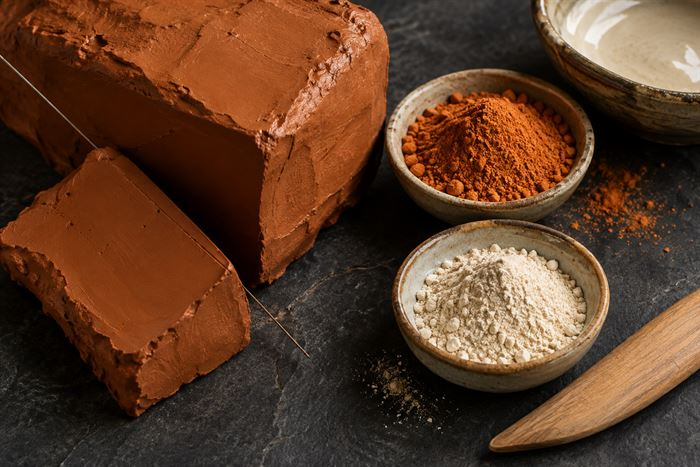
Пищевые глазури без свинца и проверенная глина с понятным составом
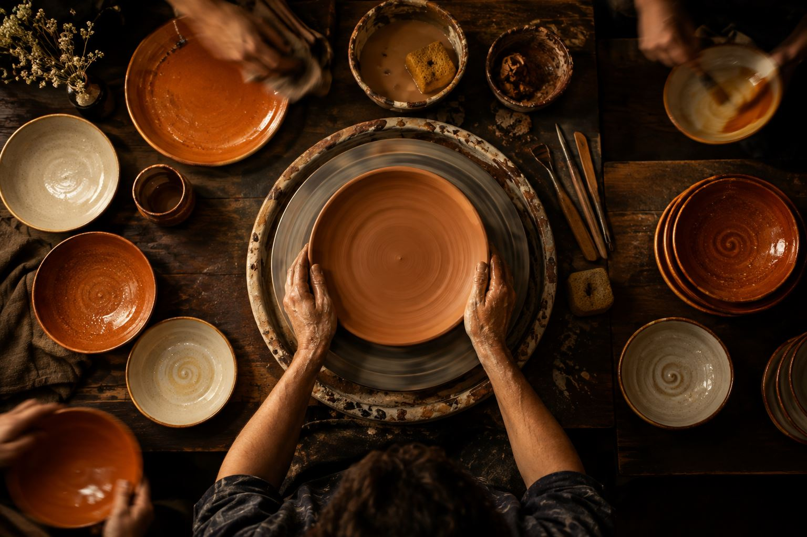
Изучаем меню, концепцию и посадку — понимаем, какую роль играет подача
Предлагаем формы, глазури и сценарии подачи под ключевые блюда
Обжигаем тестовые образцы — вы трогаете их и утверждаете вживую
Проверяем на реальной смене: посудомойка, стопки, вес, нагрев
Делаем партию вручную и проверяем каждое изделие
Привозим, бережно упаковываем, храним рецепт глазури для дозаказов
Точную стоимость считаем после брифа. Эскиз и образцы глазури — бесплатно при заказе от пилотной серии.
Для открытия заведения или теста новой подачи
от 45 000 ₽
Для ресторанов, которые обновляют подачу целиком
от 220 000 ₽
Для тех, кто уже работает с нашей посудой
от 1 500 ₽ / шт.
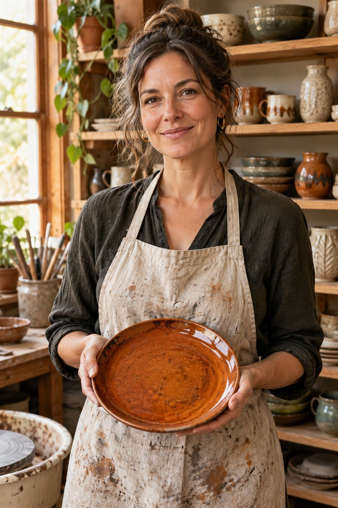
Я пришла в керамику из ресторанного дизайна и видела, как красивые интерьеры «ломаются» о типовую посуду. Так появилась «Терра» — мастерская, которая делает посуду как часть концепции заведения.
Мы работаем небольшой командой и не берём больше проектов, чем можем сделать вручную и без спешки. Каждое изделие проходит через руки мастера и проверку на кухне.
Гости начали снимать каждое блюдо сета. За первый месяц у нас было больше отметок в соцсетях, чем за полгода до этого.
Для нас было важно, чтобы посуда выдерживала посудомойку и плотные смены. Через полгода — ни одного скола на глазури.
Понравилось, что всё прозрачно: эскизы, образцы, тест на кухне. Дозаказ сделали за три недели — один в один с первой партией.
Не нашли ответ? Напишите нам — отвечаем в течение часа в рабочее время.
Написать в TelegramДа. Мы используем каменную массу и высокотемпературный обжиг, а каждую серию тестируем на вашей кухне до запуска в производство.
Пилотная серия — от 30 изделий, дозаказ — от 10 изделий.
Пилотная серия — от 4 недель, коллекция под меню — 6–8 недель с учётом образцов и теста.
Мы храним рецепт глазури и формы 3 года, поэтому дозаказ будет таким же, как первая партия.
Да, ставим клеймо с логотипом на дно или на борт изделия.
Да, отправляем по всей России в надёжной упаковке, а образцы можно получить заранее.
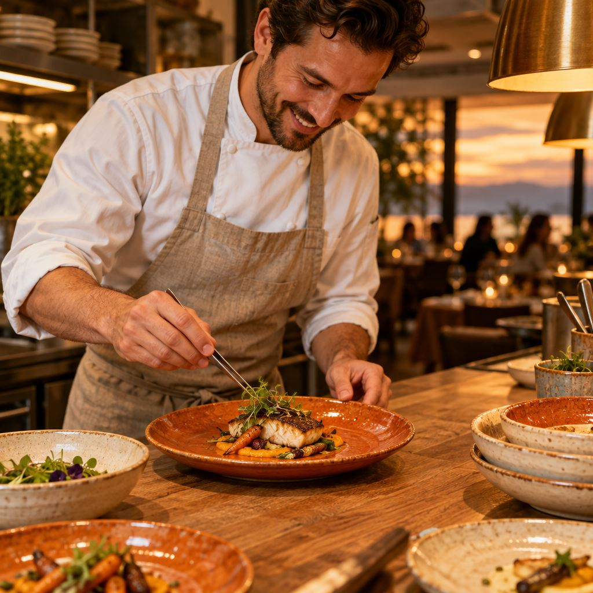
давайте начнём
Начнём с концепт-встречи на 30–45 минут. Вы получите идеи форм и глазурей под ключевые блюда, план работ и вилку бюджета.